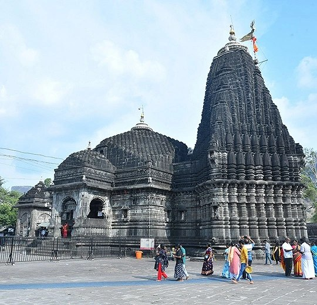

Temple · Nashik District
Plan Your Visit
Trimbakeshwar Temple
A renowned Jyotirlinga temple dedicated to Lord Shiva, set in the serene hills near Nashik. One of Maharashtra's most revered pilgrimage sites.
Distance from villa
23 km
Approx. 45 mins
Brahmagiri Hills
Scenic mountain surroundings
Jyotirlinga
One of India's 12 sacred Jyotirlingas
Godavari Origin
Origin region of the sacred river